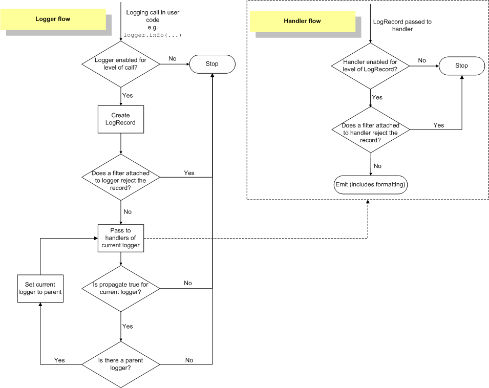

logging模块
类
| 类 | 父类 | |
|---|---|---|
| Logger | 日志记录器 | |
| RootLogger | Logger | 根日志记录器类 |
| Handler | 处理器，日志的实际处理者。有众多处理器子类 | |
| Formatter | 格式化器，日志输出格式控制 | |
| Filter | 过滤器，在Logger实例或Handler实例上过滤日志记录 |
记录器Logger
日志记录器都是Logger类的实例，可以通过它实例化得到。但是logging模块也提供了工厂方法。
Logger实例的构建，使用Logger类也行，但推荐getLogger函数。
根记录器
logger模块为了使用简单，提供了一些快捷方法，这些方法本质上都用到了记录器实例，即根记录器实例。
1 | # logging模块代码中有下列代码 |
也就是说，logging模块一旦加载，就立即创建了一个root对象，它是Logger子类RootLogger的实例。日志记录必须使用Logger实例。
实例和名称
每一个Logger实例都有自己的名称，使用getLogger获取记录器实例时，必须指定名称。
在管理器内部维护一个名称和Logger实例的字典。
根记录器的名称就是"root"。
未指定名称，getLogger返回根记录器对象。
1 | import logging |
层次结构
记录器的名称另一个作用就是表示Logger实例的层次关系。
Logger是层次结构的，使用 . 点号分割，如’a’、‘a.b’或’a.b.c.d’，a是a.b的父parent，a.b是a的子child。对于foo来说，名字为foo.bar、foo.bar.baz、foo.bam都是 foo的后代。
1 | import logging |
级别Level
| 级别 | 数值 |
|---|---|
| CRITICAL | 50 |
| ERROR | 40 |
| WARNING | 30 |
| INFO | 20 |
| DEBUG | 10 |
| NOTSET | 0 |
级别可以是一个整数。0表示未设置，有特殊意义。
级别可以用来表示日志消息级别、记录器级别、处理器级别
消息级别
每一条日志消息被封装成一个LogRecord实例，该实例包含消息本身、消息级别、记录器的name等信息。
消息级别只能说明消息的重要等级，但不一定能输出
记录器级别
日志输出必须依靠记录器，记录器设定自己的级别，它决定着消息是否能够通过该日志记录器输出。
如果日志记录器未设置自己的级别，默认级别值为0。
记录器有效级别
如果日志记录器未设置自己的级别，默认级别值为0，等效级别就继承自己的父记录器的非0级别，如果设置了自己的级别且不为0，那么等效级别就是自己设置的级别。
如果所有记录器都没有设置级别，最终根记录器一定有级别，且默认设置为WARNING。
只有日志级别高于产生日志的记录器有效级别才有资格输出。
处理器级别
每一个Logger实例其中真正处理日志的是处理器Handler，每一个处理器也有级别。它控制日志消息是否能通过该处理器Handler输出。
根记录器使用
产生日志
logging模块提供了debug、info、warning、error、critical等快捷函数，可以快速产生相应级别消息。
本质上这些方法使用的都是根记录器对象。
格式字符串
| 属性名 | 格式 | 描述 |
|---|---|---|
| 日志消息内容 | %(message)s | The logged message, computed as msg % args. 当调用Formatter.format()时设置 |
| asctime | %(asctime)s | 创建LogRecord时的可读时间。默认情况下，它的格式为’2003-07-08 16:49:45,896’（逗号后面的数字是毫秒部分的时间） |
| 函数名 | %(funcName)s | 日志调用所在的函数名 |
| 日志级别名称 | %(levelname)s | 消息的级别名称 ‘CRITICAL’ ‘DEBUG’, ‘INFO’, ‘WARNING’, ‘ERROR’ |
| 日记级别数值 | %(levelno)s | 消息的级别数字 CRITICAL ，对应DEBUG, INFO, WARNING, ERROR |
| 行号 | %(lineno)d | 日志调用所在的源码行号 |
| 模块 | %(module)s | 模块（filename的名字部分） |
| 进程ID | %(process)d | 进程 ID |
| 线程ID | %(thread)d | 线程 ID |
| 进程名称 | %(processName)s | 进程名 |
| 线程名称 | %(threadName)s | 线程名字 |
| logger | 名称 %(name)s | logger名字 |
::: warning
注意：funcName、threadName、processName都是小驼峰
:::
基本配置
logging模块提供basicConfig函数，本质上是对根记录器做最基本配置
1 | import logging |
basicConfig函数执行完后，就会为root提供一个处理器，那么basicConfig函数就不能再调用了
处理器Handler
日志记录器需要处理器来处理消息，处理器决定着日志消息输出的设备。
Handler 控制日志信息的输出目的地，可以是控制台、文件。
- 可以单独设置level
- 可以单独设置格式
- 可以设置过滤器
Handler类层次
- Handler
- StreamHandler # 不指定使用sys.stderr
- FileHandler # 文件
- _StderrHandler # 标准输出
- NullHandler # 什么都不做
- StreamHandler # 不指定使用sys.stderr
日志输出其实是Handler做的，也就是真正干活的是Handler。
basicConfig函数执行后，默认会生成一个StreamHandler实例，如果设置了filename，则只会生成一个FileHandler实例。
每一个记录器实例可以设置多个Handler实例。
1 | # 定义处理器 |
格式化器Formatter
每一个记录器可以按照一定格式输出日志，实际上是按照记录器上的处理器上的设置的格式化器的格式字符串输出日志信息。
如果处理器上没有设置格式化器，会调用缺省_defaultFormatter，而缺省的格式符为
1 | class PercentStyle(object): |
日志流
下图是官方日志流转图

继承关系及信息传递
- 每一个Logger实例的level如同入口，让水流进来，如果这个门槛太高，信息就进不来。例如log3.warning(‘log3’)，如果log3定义的级别高，就不会有信息通过log3
- 如果level没有设置，就用父logger的，如果父logger的level没有设置，继续找父的父的，最终可以找到root上，如果root设置了就用它的，如果root没有设置，root的默认值是WARNING
- 消息传递流程
-
- 如果消息在某一个logger对象上产生，这个logger就是当前logger，首先消息level要和当前logger的EffectiveLevel比较，如果低于当前logger的EffectiveLevel，则流程结束；否则生成log记录
-
- 日志记录会交给当前logger的所有handler处理，记录还要和每一个handler的级别分别比较，低的不处理，否则按照handler输出日志记录
-
- 当前logger的所有handler处理完后，就要看自己的propagate属性，如果是True表示向父logger传递这个日志记录，否则到此流程结束
-
- 如果日志记录传递到了父logger，不需要和父logger的level比较，而是直接交给父的所有handler，父logger成为当前logger。重复2、3步骤，直到当前logger的父logger是None退出，也就是说当前logger最后一般是rootlogger（是否能到root logger要看中间的logger是否允许propagate）
-
- logger实例初始的propagate属性为True，即允许向父logger传递消息
- logging.basicConfig函数
如果root没有handler，就默认创建一个StreamHandler，如果设置了filename，就创建一个FileHandler。如果设置了format参数，就会用它生成一个Formatter对象，否则会生成缺省Formatter，并把这个formatter加入到刚才创建的handler上，然后把这些handler加入到root.handlers列表上。level是设置给root logger的。
如果root.handlers列表不为空，logging.basicConfig的调用什么都不做。
日志示例
1 | import logging |
在logging.handlers模块中有RotatingFileHandler、TimedRotatingFileHandler等供使用
1 | import logging |